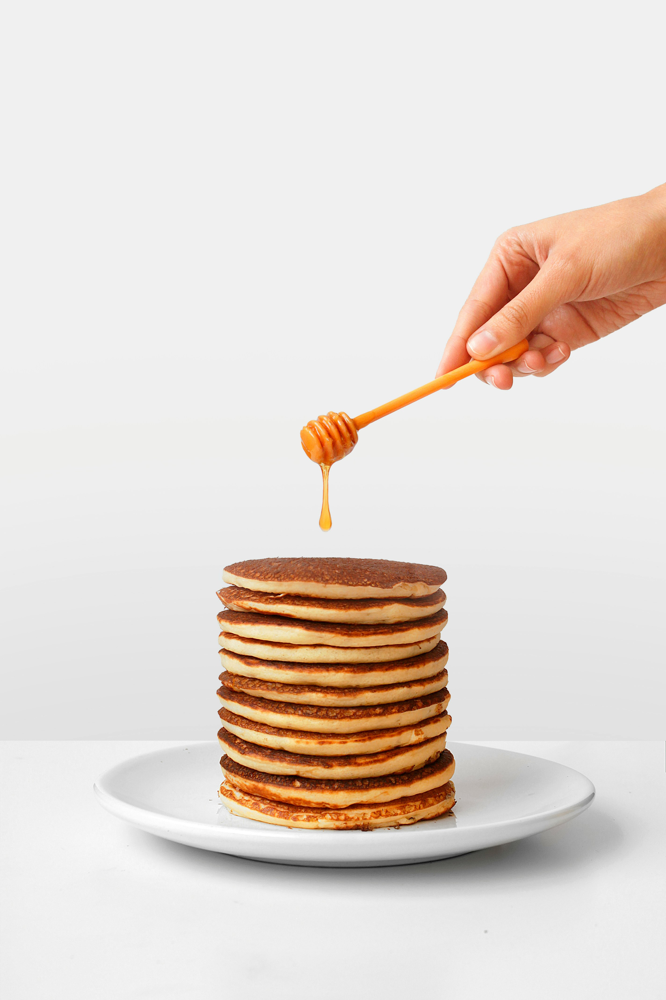

Home
Pancake

Description
A simple recipe on how to make a delicious Pancake
Ingredients
- 1.5 cups all-purpose flour
- 3.5 teaspoons baking powder
- 1 teaspoon salt
- 1 tablespoon granulated sugar
- 1.25 cups milk
- 1 egg
- 3 tablespoons melted butter (plus extra for cooking)
Steps
- Whisk together flour, baking powder, salt, and sugar in a large bowl.
- In a separate bowl, whisk milk, egg, and melted butter.
- Pour wet ingredients into dry ingredients; mix until just combined (lumps are okay).
- Heat a lightly buttered griddle or non-stick pan over medium heat. Pour 1/4 cup batter per pancake.
- Cook until bubbles form on top, then flip and cook until golden brown. Serve hot with syrup and butter.